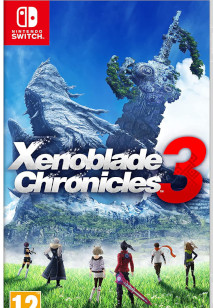
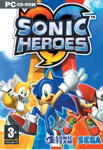
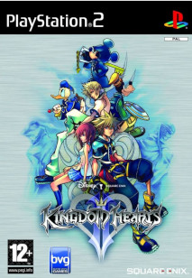
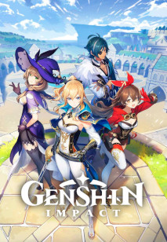

Carátula
Título
Salida
Género
Descripción
Xenoblade Chronicles 3
2022
JRPG
Un mundo donde hay una guerra permanente entre dos bandos, tres jóvenes de cada uno de estos dos bandos se verán envueltos en un acotencimiento que cambiará la manera en la que perciben esta guerra, y se verán forzados a arreglar la guerra y el mundo donde viven

Sonic Heroes
2004
Plataformas
Manejando hasta cuatro equipos de 3 personajes cada uno, cada uno de estos equipos tendrá que avanzar en escenarios a alta velocidad para poder alcanzar cada uno su meta, entre salvar el mundo a finalizar un contrato que han tenido que aceptar

TLoZ: Skyward Sword
2011
Acción-aventura
Viviendo en un mundo por encima de las nubes, acontecimientos harán que un joven baje al mundo inferior para poder encontrar a una amiga a la que han secuestrado
Kingdom Hearts II
2006
Acción-aventura
Después de los acontecimientos de los otros juegos, los protagonistas tendrán que enfrentarse contra seres que no tienen corazón para evitar que dominen el mundo
Genshin Impact
2020
Aventura
Dos hermanos se separan y uno de ellos tendrá que recorrer todas las naciones y conocer a sus dioses para poder encontrar a su hermano y descubrir la verdad del mundo